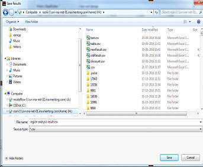
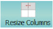

To access: In the Calibre DefectReview window, select Utilities > Defect Management
The Defect Management Window provides the capability to perform defects trend analysis across inspections. Examples include region analysis, defect source analysis and blank defect transfer analysis.
You must have database server connectivity in order to use the Defect Management window. Refer to “Defect Database” for instructions on setting up a database server.
You can also invoke the Defect Management window by clicking the Defect Management window icon in the Calibre DefectReview window.
Select a query from the Select Query pane to the left of the window, invoking a specific Query tab. Each Query tab in the Defect Management window contains a toolbar that enables you to perform operations such as executing a query, exporting results to CSV file, and resizing results table columns.
The results of queries are displayed in tabular format for further analysis. The following figure illustrates the results of region analysis in tabular format. You can reduce the number of results by applying filters and rerunning the queries.
To launch an inspection in the Calibre DefectReview main window with only defects available in the results table, double-click in an inspection row in the table. This opens an inspection in the same Calibre DefectReview window if there is no other inspection open. A new inspection opens in a new Calibre DefectReview window if there are other inspections already open.
You can show or hide columns of the results table by right-clicking on result table’s horizontal header and selecting the Manage option as shown in following figure.
After you select the Manage option, a Manage Columns dialog box appears.
To select all columns, click Select All. To unselect all columns click, Un Select All. After selecting your columns, click Ok to display selected columns values in result table.
At least one column must be selected or an error message is generated.
Object |
Description |
|---|---|
Select Query |
Select a query type for analysis: Region Analysis, Defect Source Analysis, or Blank Transfer Analysis. |
Region Analysis tab |
Analyze defect attributes in a specified mask region. See “Performing Region Analysis” for further information. |
Defect Source Analysis tab |
Finds the defect and inspection where a defect was first detected. See “Performing Defect Source Analysis” for further information. |
Blank Transfer Analysis tab |
Finds whether a defect from blank inspection is transferred to patterned inspection at later stages of inspections. See “Performing Blank Transfer Analysis” for further information. |
Defect Progress Tracking tab |
Tracks a mask defect’s properties across inspections to find substantial deviations. See “Defect Progress Tracking (DPT)” for further information. |
Execute |
Runs a query once the filters are specified. |
Export |
Exports the results to CSV file once results of a query is available. After you click Export, a Save Results dialog box appears. Specify the CSV file name and click the Save button to save the results to file. Figure 7. Save Results
 |
|  Resize Columns |
Resizes the result table columns to its contents. When you click Resize Columns, the following warning message is displayed in a dialog box: When you click Yes in the warning message dialog box, the result table columns are resized to their contents’ size. |